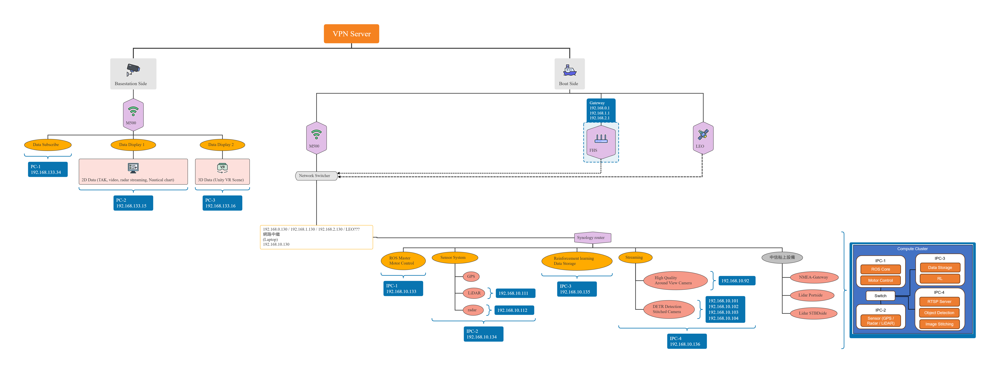
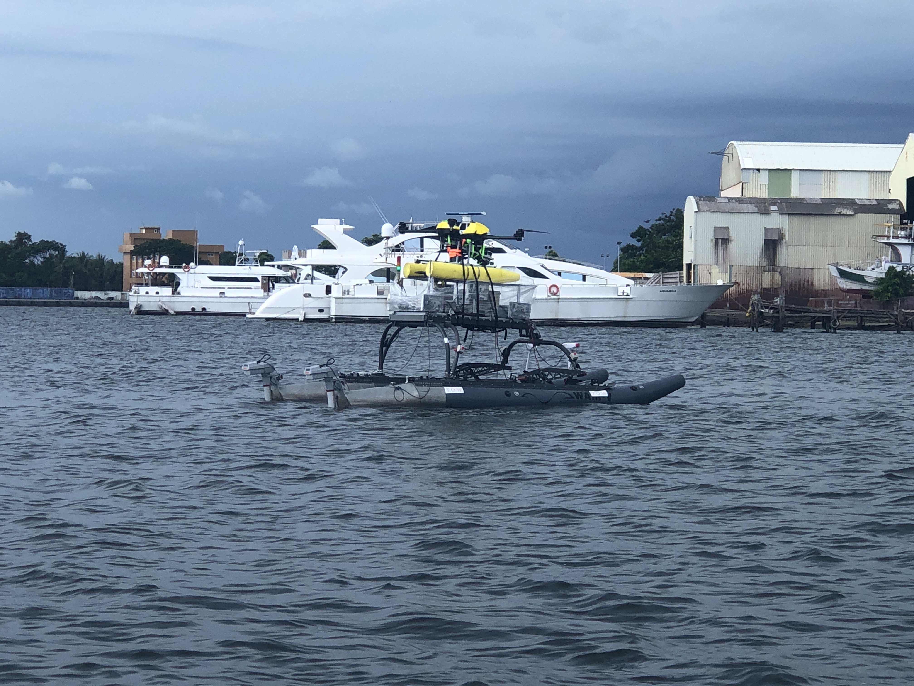
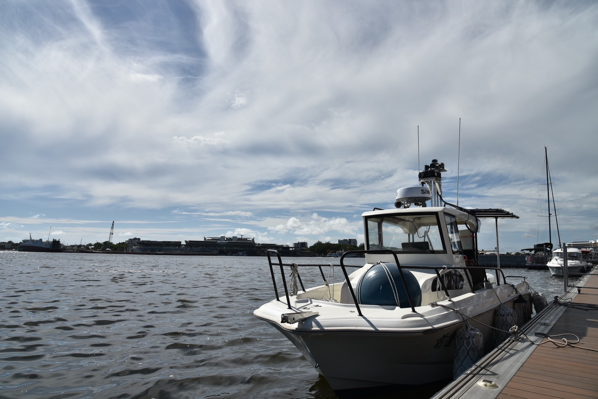
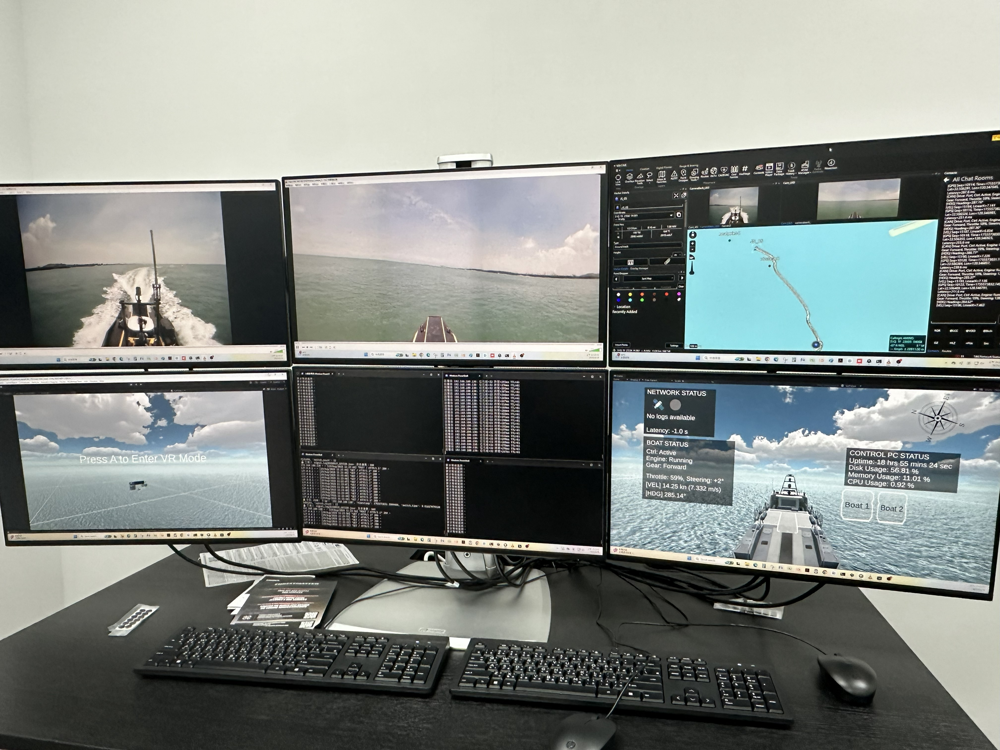
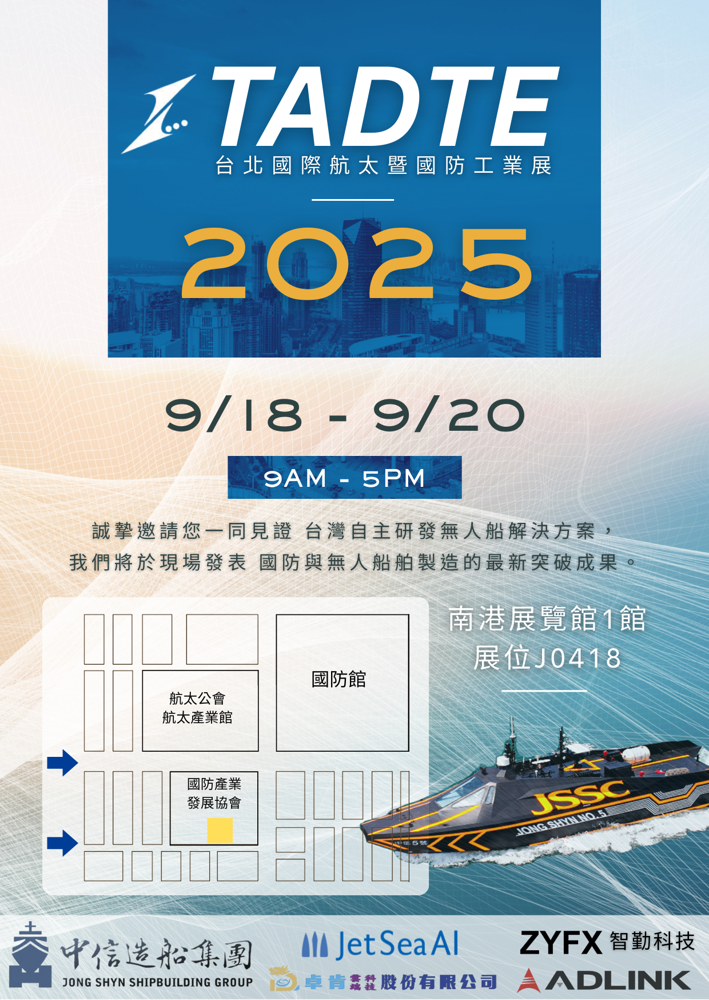
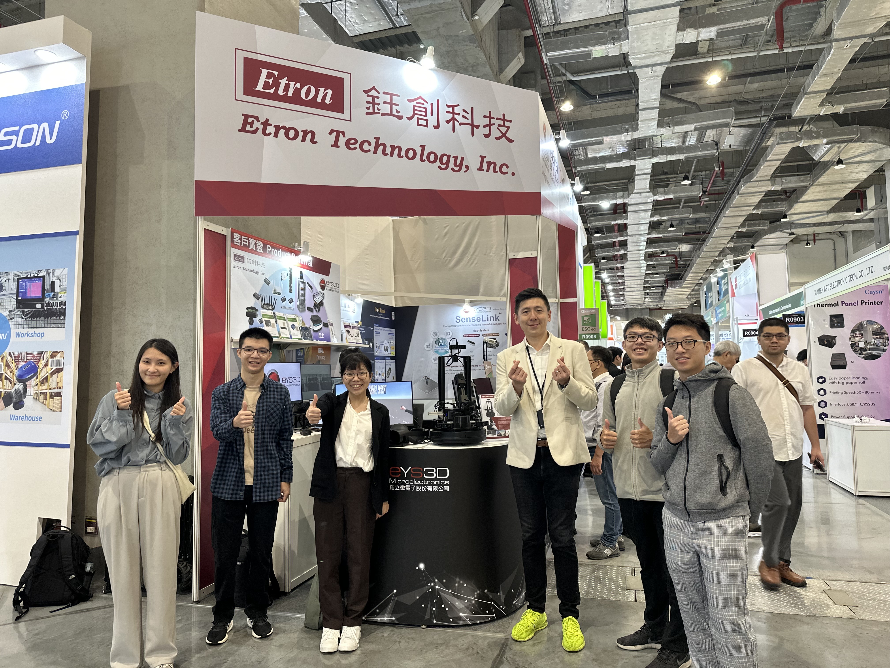
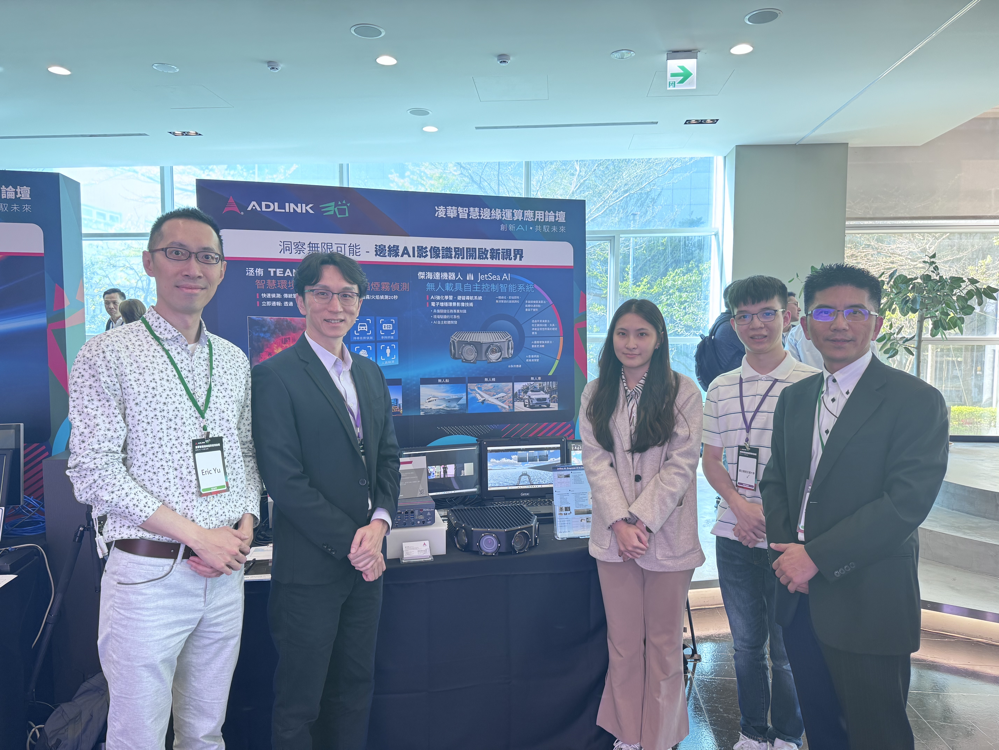
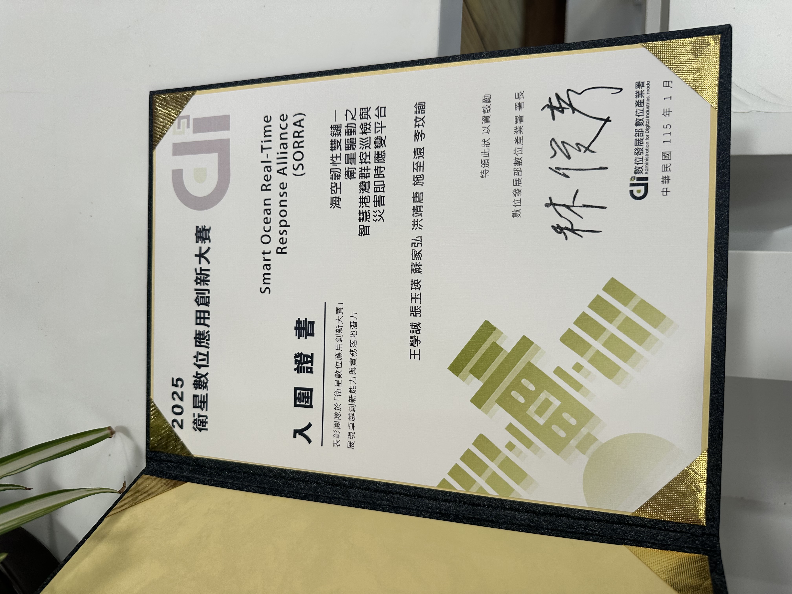

代表專案與展示
本頁展示我在無人船系統、通訊架構整合、機器人系統、實地測試與技術展示等方面的重要專案成果。
專業專案
主要技術專案，包含系統整合、無人船測試、即時監控系統與多鏈路通訊架構設計。

多鏈路海上通訊架構
設計並整合多鏈路海上通訊系統， 串接 ROS 模組、邊緣運算設備、LTE、衛星與監控站， 支援無人船任務運行。

WAM-V 無人船測試
於實際海域環境進行無人船測試， 驗證感測系統、通訊穩定度與船舶運行能力。

8 公尺級無人船系統整合
參與 8 公尺級無人船系統整合與測試， 包含感測器整合、通訊連線與航行測試。

即時監控與視覺化系統
建立任務監控介面， 提供即時資料視覺化與操作監控， 支援海上任務決策。
5G VR 遠端監控
此原型探索沉浸式介面如何增強遠端操作與任務觀察，提供直觀的監控環境，適用於機器人、無人載具與智慧監控系統。
Unity 中的即時 LiDAR 點雲視覺化
此系統展示了如何將機器人感知數據整合到遊戲引擎中，用於監控、模擬和人機互動介面。
WinTAK 即時影片串流整合
此系統展示了如何將機器人平台或現場感測器的影片串流整合到態勢感知工具中， 以支援任務監控與操作決策。
Android 機器人遠端操作介面
系統整合了基於 Unity 的介面設計與機器人控制指令， 透過智慧型手機或平板實現直觀的遠端操作。 此方法提供了便攜且使用者友好的控制解決方案， 適用於機器人實驗與現場部署。
Unity AI 角色示範 – Hugging Face 整合
此原型展示了如何將大型語言模型嵌入互動環境中，使 AI 驅動的角色能夠應用於模擬、遊戲或教育場景。
Pacman 強化學習視覺化
此系統提供了一種直觀的方式來觀察 AI 代理如何通過與環境的互動學習導航和決策策略。
展演與技術展示
公開展示與產業展覽， 呈現系統實際應用與研究成果。

TADTE 台北國防展
於台北航太與國防科技展展示無人船技術與系統成果。

COMPUTEX 技術展示
於 COMPUTEX 國際科技展展示系統應用與技術成果。

ADLINK AI Forum 展示
於 AI 與邊緣運算論壇展示系統能力與應用案例。

衛星數位應用創新競賽
以「智慧海洋即時應變聯盟（SORRA）」專案 入圍衛星數位應用創新競賽。